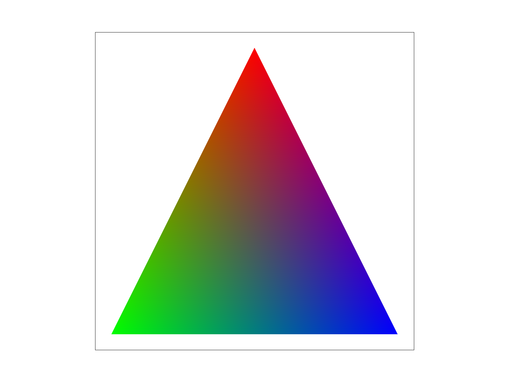
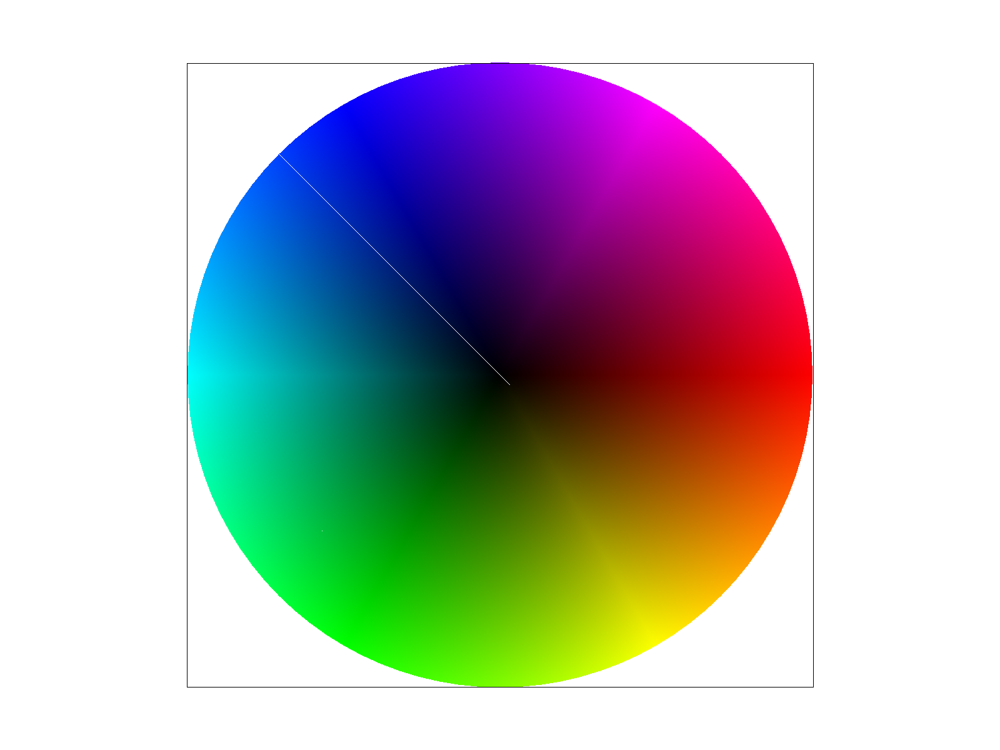
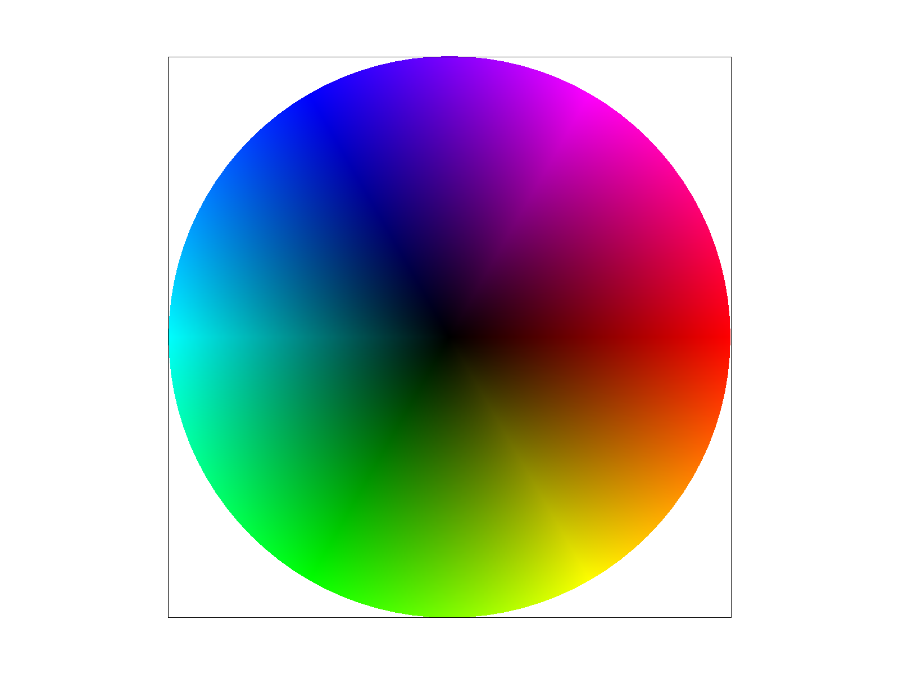

Task4: Barycentric coordinates
Explaining Barycentric Coordinates
We often specify attributes—such as colors, texture coordinates, or normal vectors—only at the three vertices of a triangle. However, to render a solid shape, we need to obtain smoothly varying values for every single pixel across the triangle's surface. To achieve this smooth transition from the given vertex values, we use barycentric coordinates for interpolation.
Barycentric coordinates provide a coordinate system for defining the location of a point strictly relative to the vertices of a triangle. A point \(P\) inside a triangle with vertices \(A\), \(B\), and \(C\) is expressed as a weighted sum of those three vertices:
For the point to be valid inside the triangle, the weights must satisfy \(\alpha + \beta + \gamma = 1\), and \(\alpha, \beta, \gamma \ge 0\).

To understand this visually, we took color interpolation as an example. The triangle above has one pure red, one pure green, and one pure blue vertex. Barycentric coordinates act as proportional weights based on area. If a point \(P\) is very close to the red vertex, its corresponding weight will be close to \(1\), while the weights for green and blue will be close to \(0\), making that pixel predominantly red.
As moving across the surface, these weights shift proportionally, which allows us to smoothly interpolate the colors across the entire geometry, resulting in the smooth gradients seen in the image.
Implementation
The function rasterize_interpolated_color_triangle is based on the standard rasterize_triangle function, which calculates the exact barycentric weights for every sample point to blend the colors \(C_0\), \(C_1\), and \(C_2\).
The edge functions used for the point-in-triangle test directly map to the proportional areas needed for barycentric coordinates:
- \(L_0 = (P_1-P_0)\times (x-x_0,y-y_0)\). The edge function for \(P_0 \rightarrow P_1\), which gives a value proportional to the area of the sub-triangle formed by \(P_0, P_1, P\). Since this sub-triangle is opposite to vertex \(P_2\). \(L_0\) represents the weight for \(P_2\) (\(\gamma\)).
- \(L_1 = (P_2-P_1)\times(x-x_1,y-y_1)\). The edge function for \(P_1 \rightarrow P_2\), representing the area opposite to \(P_0\). This determines the weight for \(P_0\) (\(\alpha\)).
- \(L_2 = (P_0-P_2)\times(x-x_2,y-y_2)\). The edge function for \(P_2 \rightarrow P_0\), representing the area opposite to \(P_1\). This determines the weight for \(P_1\) (\(\beta\)).
The final weights are normalized by the sum of all three edge functions:
Precision Issue

After the first implementation, an artifact appeared: A white line would render along the shared edges of triangles. This was identified as a floating-point precision issue where accumulated values drifted, causing points exactly on the edge to evaluate as microscopic numbers and fail the boundary check. To fix this, the edge function accumulator variables were changed from float to double, and an EPSILON = 1e-6 tolerance was added to the boundary checks to ensure robust rasterization without dropping edge pixels.
Result Screenshot

test7.svg: This test shows the barycentric interpolation working flawlessly, producing a smoothly blended color wheel.